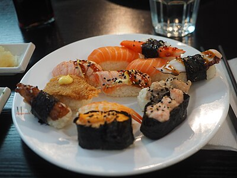
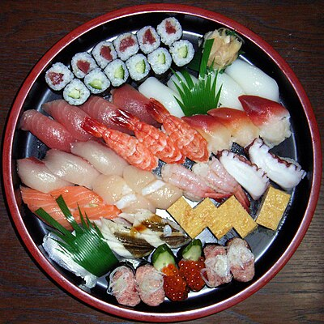
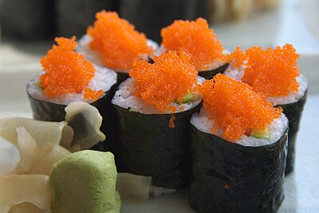
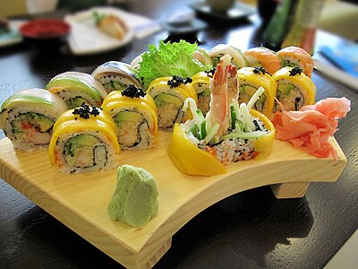
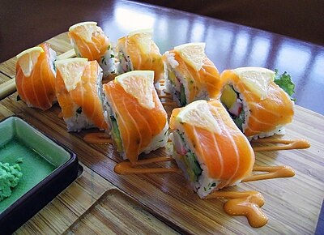
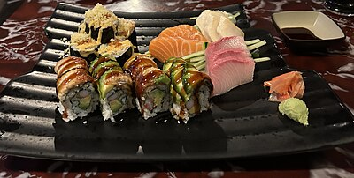
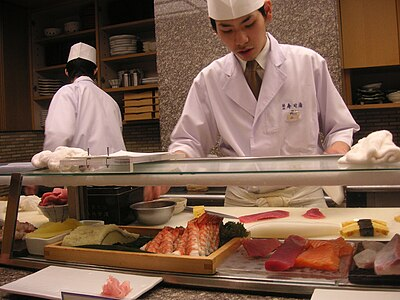
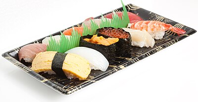

The art of sushi — types, fish, rice, and etiquette
Nigiri — Hand-pressed sushi rice topped with fish
Nigiri (握り寿司) is the cornerstone of sushi: a palm-sized oval of seasoned rice with a thin slice of fish or shellfish draped on top, often with a tiny smear of wasabi between them.
Maki & Rolls — Sushi wrapped in nori and rice
Maki (巻き寿司) uses a bamboo mat to roll sushi rice and fillings inside nori (seaweed). Uramaki reverses the order — rice outside, nori inside. Many modern rolls were invented in the USA.
Sashimi — Pure sliced fish, no rice
Sashimi (刺身) is thinly sliced raw fish or seafood served without rice. It demands absolute freshness — sashimi-grade fish is handled with extreme care from catch to knife. Served with soy sauce, wasabi, and shiso leaf garnish.
Fish Guide — Seasonality and sourcing
The best sushi chefs follow the fish calendar. Seasonality dictates fat content, flavor intensity, and price. Tsukiji and Toyosu markets in Tokyo set the global standard.
Sushi Rice & Technique
The rice (shari or sumeshi) is the soul of sushi. A chef's rice is their signature. Japanese short-grain rice is seasoned with rice vinegar, sugar, and salt immediately after cooking while still hot, then fanned to a body-temperature finish.
Sushi Etiquette — Rules of the counter
Traditional omakase dining at a high-end sushi counter has its own code. While casual conveyor-belt restaurants relax most rules, knowing proper etiquette deepens your appreciation of the craft.
Gallery







